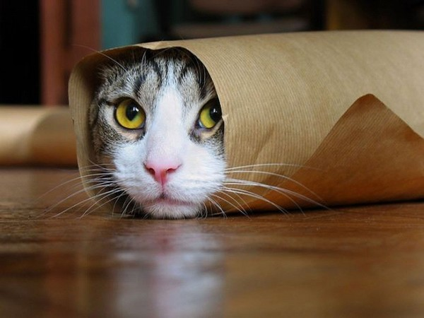
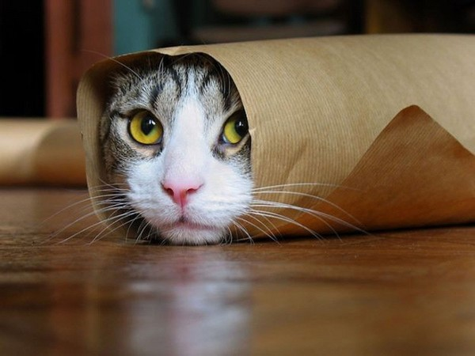

Bentley Cat Rescue is situation in the small village of Bentley in Wessex. The centre was started 10 years ago by local resident Mary Charmers in the back garden of her house with just a few pens for the cats to live in.
The Centre is still in the back garden but now comprises of 3 separate housing blocks and two large runs all of which have been financed and built with the help of the volunteers who help to run the Centre and look after the cats.
The aim of the Centre is to give a chance for unwanted and abandoned cats to find a new life with new owners. The Centre holds open days and various other events to raise money to support their aims.
 
